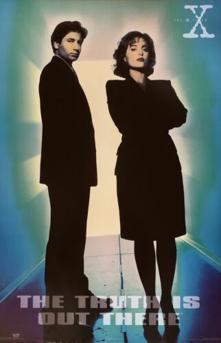
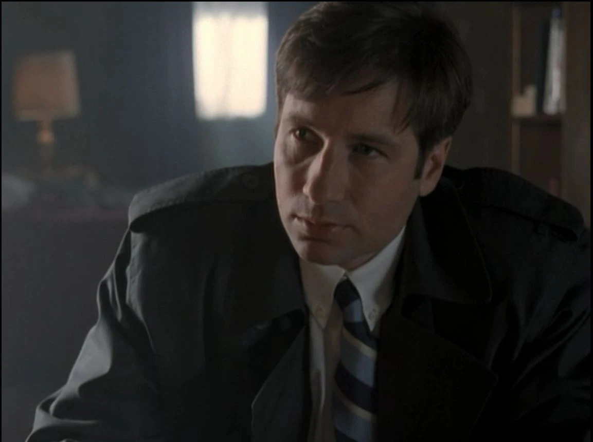
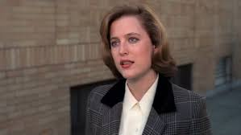

"The X-Files" is all about FBI agents Mulder and Scully diving into the weirdest, unsolved cases – the X-Files. They're tackling freaky stuff with twists of supernatural and paranormal. It's a non-stop, mind-bending mystery ride with these two on the case!
CharactersFox Mulder Played by: David Duchovny Danny Scully  Played by: Gillian Anderson |